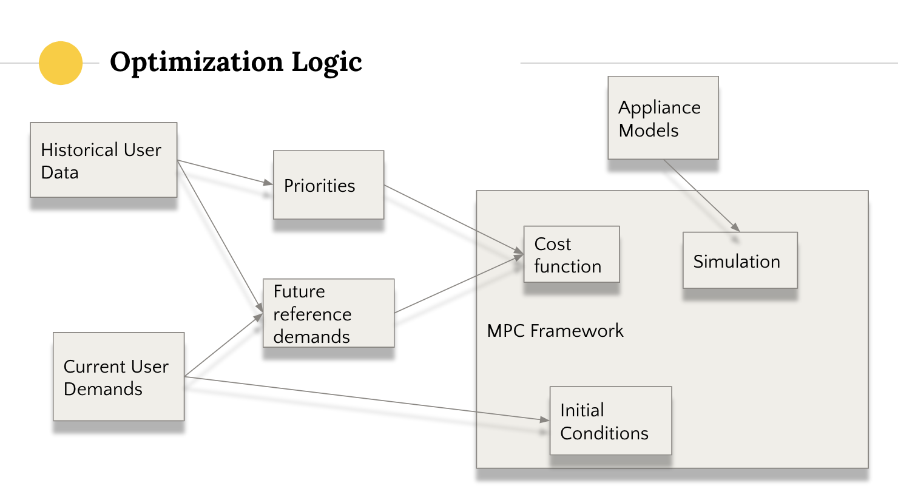

Hover over the legend to see the energy use profiles of specific appliances, click and drag a section of the chart to brush and zoom in on a particular time frame.
Consumption Constraints
Gradient Consumption
Electric Vehicle Charging
The vehicle should be 80% charged by the time the customer needs to leave
50 kWh battery, charger provides max 5 kW
Water Heating
There should be enough hot water in the tank to support usual peak water usage (ML potential)
More hot water is penalized
AC (Heat Pump)
There is a range of acceptable temperatures
Power relies on outside temperature and current inside temperature
Lighting
There is a range of acceptable brightness
For LED bulbs, brightness is linearly related to energy input
Binary Consumption
Washer/Dryer
If the washer was on, it should stay on
Should use cold/colder settings if possible
Oven
If the oven was on, it should stay on
Dishwasher
If the dishwasher was on, it should stay on
Proposed Solutions
Model Predictive Control using Mixed-integer linear programming
This is an Optimization problem: Maximize power output while minimizing cost to customer satisfaction
The algorithm is linear in practice although it is expensive in theory
There are not that many variables to optimize, and only a few are binary

Load Shifting by Making Traditionally Binary Appliances Dispatchable
Rather than completely shutting off an appliance while load shifting (which may present consequences down the line), we propose making traditionally binary appliances into dispactable appliances
that gradiently consume enery.
Lighting: Creating the ability to dim lights to a certain unnoticable change in brightness, or use occupancy learned data to control room brightness.
Water Pump: Based on the capacity of hot water in the tank already, adjust heating hours based on occupany water usage data.
HVAC: use temperature sensors to determine whether or not to preheat/precool the household, creating less urgent demand for the HVAC system to be running during peak hours.